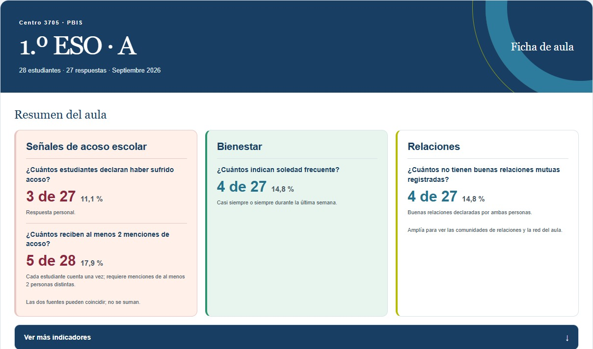

01 / Centro y aula
Lee el aula.
Una visión conjunta del bienestar, las relaciones, las señales de acoso y la mediación. Amplía la información para explorar la red del aula.
Visión del conjuntoOrientación y convivencia escolar
Una herramienta para orientación y tutoría que reúne las respuestas del alumnado en fichas claras. Comprende la convivencia del centro y contrasta los datos con lo que conoces de cada estudiante.
La práctica te acompaña con datos simulados.

El proyecto PBIS
Hay respuestas que confirman lo que ya conoces del aula y otras que invitan a mirar de nuevo. PBIS ayuda a ponerlas en contexto: cómo se sienten los estudiantes, qué relaciones describen y qué señales de acoso comunican.
De la visión del centro al detalle de una persona, puedes recorrer los datos, explorar las redes de relaciones y aportar tu valoración. La información sirve para preparar conversaciones y orientar el acompañamiento, junto con el criterio del equipo educativo.
Qué puedes consultarTres formas de mirar
Consulta el centro o el aula, recorre la lista y abre cada ficha.
01 / Centro y aula
Una visión conjunta del bienestar, las relaciones, las señales de acoso y la mediación. Amplía la información para explorar la red del aula.
Visión del conjunto02 / Lista de aula
Ordena los indicadores para comparar respuestas. Marca lo que encaja, lo que conviene revisar o lo que te sorprende, y añade tu valoración.
Estudiantes del aula03 / Ficha de estudiante
Empieza por las señales de acoso, el bienestar y las relaciones. Despliega el detalle para comprender cada respuesta en su contexto.
Una persona en su contextoLos indicadores abren preguntas. Su interpretación requiere contexto y criterio profesional. PBIS no ofrece diagnósticos ni decisiones automáticas sobre los estudiantes.
Así funciona
Consulta desde la web o descarga PBIS para trabajar en tu equipo. El recorrido es el mismo.
Leer la guía de usoIntroduce el usuario o DNI y la contraseña que te haya facilitado orientación.
Carga tu Excel compatible o archivo .pbis. En un proyecto protegido, el archivo comprueba el acceso a las aulas asignadas.
Consulta el resumen, pasa a la lista y entra en las fichas de estudiantes. Amplía los indicadores cuando necesites más contexto.
Valora los datos y revisa lo que vas a enviar. Al terminar, pulsa «Cerrar sesión».
Edición local
Descarga PBIS 0.12.0, extrae el ZIP y abre index.html. Las fichas y la práctica guiada funcionan sin conexión. El envío de valoraciones y el registro de accesos requieren Internet.
Abre el archivo HTML con Edge, Chrome o Firefox.
Descargar para Windows ZIP · Visualizador HTML localAbre el archivo HTML con un navegador actualizado.
Descargar para macOS ZIP · Visualizador HTML localAbre el archivo HTML con Chrome, Chromium o Firefox.
Descargar para Linux ZIP · Sin instalación de paquetes¿Lo vas a compartir entre distintos equipos? La descarga universal incluye la misma aplicación e instrucciones comunes.
Descargar ZIP universalAntes de empezar
Lo esencial para empezar a consultar.
Cómo se tratan los archivosTu cuenta y el archivo del proyecto facilitados por orientación. Si quieres conocer la herramienta primero, la práctica guiada te da un acceso de demostración y datos simulados.
Solo necesitas un navegador actualizado. Para trabajar en local, descarga el ZIP, extrae la carpeta y abre index.html. La consulta y la práctica funcionan sin conexión.
En los proyectos protegidos, orientación consulta todo el centro y asigna las aulas de cada cuenta docente. También decide qué perfiles pueden descargar las fichas en PDF.
El Excel y el proyecto .pbis se leen en tu navegador. Al enviar valoraciones se comparten los códigos y valores asociados, la cuenta y tus comentarios; no se adjunta el Excel completo. Si el registro está activado, se comunica el uso de la cuenta, el centro y el nombre del archivo. Las valoraciones de la demo no se envían.
Más sobre las valoracionesPulsa «Cerrar sesión». Si tienes valoraciones pendientes, podrás revisarlas y enviarlas o salir sin enviarlas. Si el envío falla, puedes reintentarlo. Cerrar la pestaña directamente puede perder lo pendiente.
Cuando tu perfil tiene permiso, puedes descargar en PDF las fichas que puedes consultar. Los PDF docentes conservan la marca de agua de la cuenta y se abren con el DNI de quien los genera.
Esta edición permite consultar una medición y aportar valoraciones. El seguimiento de actuaciones y la comparación entre mediciones forman parte de la siguiente fase del proyecto.
Equipo del proyecto PBIS
El proyecto está en fase de evaluación. Trabajamos con las valoraciones de profesionales de la educación para mejorar la claridad de las fichas, su interpretación y su utilidad en el día a día.
PBIS · Orientación y convivencia